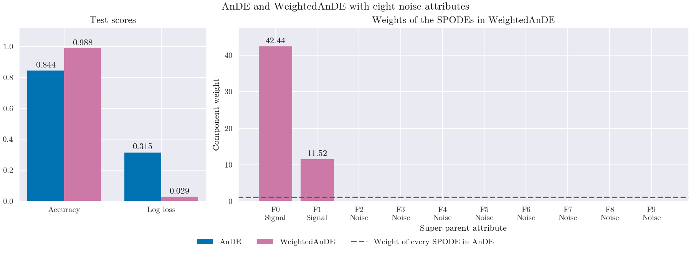

Note
Go to the end to download the full example code.
Component weights as a selection of super-parents#
The component weights of skbn.WeightedAnDE act as an embedded
selection of attributes. With n_dependence=1 and weight_level=1
every SPODE, identified by its super-parent, gets one weight. With the
geometric mean (mean="geometric") the weights scale the log-joints of
the SPODEs and stay non-negative, so they read as the importance of each
super-parent.
The class depends on two attributes, one categorical and one continuous, and eight more attributes are noise. AnDE gives the same weight to every SPODE. The weighted model drives the weights of the SPODEs rooted at noise attributes to zero, which lowers the log loss and raises the accuracy.

Training models...
# Author: The scikit-bayes Developers
# SPDX-License-Identifier: BSD-3-Clause
import matplotlib.pyplot as plt
import numpy as np
from sklearn.metrics import accuracy_score, log_loss
from sklearn.model_selection import train_test_split
from skbn import AnDE, WeightedAnDE
np.random.seed(42)
n_samples = 20000 # Many samples, so that the weights converge
n_features = 10
# Informative attributes: one categorical and one continuous
X_cat = np.random.randint(0, 3, size=(n_samples, 1))
X_cont = np.random.randn(n_samples, 1)
# Class 1 when (cat = 0 and x > 0.5) or (cat = 1 and x < -0.5)
y = np.zeros(n_samples, dtype=int)
mask_0 = (X_cat.flatten() == 0) & (X_cont.flatten() > 0.5)
mask_1 = (X_cat.flatten() == 1) & (X_cont.flatten() < -0.5)
y[mask_0 | mask_1] = 1
X_noise = np.random.randn(n_samples, 8)
X = np.hstack([X_cat, X_cont, X_noise])
X_train, X_test, y_train, y_test = train_test_split(
X, y, test_size=0.3, random_state=42
)
print("Training models...")
ande = AnDE(n_dependence=1)
ande.fit(X_train, y_train)
acc_ande = accuracy_score(y_test, ande.predict(X_test))
ll_ande = log_loss(y_test, ande.predict_proba(X_test))
# One weight per SPODE, with a strong penalty for a clearer picture
wande = WeightedAnDE(n_dependence=1, mean="geometric", l2_reg=0.05, max_iter=200)
wande.fit(X_train, y_train)
acc_wande = accuracy_score(y_test, wande.predict(X_test))
ll_wande = log_loss(y_test, wande.predict_proba(X_test))
features = [f"F{i}\n{'Signal' if i < 2 else 'Noise'}" for i in range(n_features)]
indices = np.arange(n_features)
# One weight per SPODE (weight_level=1); the last one is shared by unseen states
wande_weights = wande.learned_weights_[:n_features]
fig, (ax_score, ax_w) = plt.subplots(
1, 2, figsize=(12, 4.4), gridspec_kw={"width_ratios": [1, 2.4]}
)
# Test scores of both models
width = 0.38
for k, (name, color, scores) in enumerate(
[
("AnDE", "#0072B2", (acc_ande, ll_ande)),
("WeightedAnDE", "#CC79A7", (acc_wande, ll_wande)),
]
):
bars = ax_score.bar(
np.arange(2) + (k - 0.5) * width, scores, width, color=color, label=name
)
ax_score.bar_label(bars, fmt="%.3f", padding=2)
ax_score.set_xticks([0, 1], ["Accuracy", "Log loss"])
ax_score.set_ylim(0, 1.12)
ax_score.set_title("Test scores")
# Weights of the SPODEs; AnDE gives every SPODE a weight of 1
bars = ax_w.bar(indices, wande_weights, color="#CC79A7")
ax_w.bar_label(
bars, labels=[f"{w:.2f}" if w > 0.1 else "" for w in wande_weights], padding=2
)
ax_w.axhline(1.0, color="#0072B2", ls="--", label="Weight of every SPODE in AnDE")
ax_w.set_xticks(indices, features)
ax_w.set_xlabel("Super-parent attribute")
ax_w.set_ylabel("Component weight")
ax_w.set_ylim(0, 1.12 * wande_weights.max())
ax_w.set_title("Weights of the SPODEs in WeightedAnDE")
handles = ax_score.get_legend_handles_labels()[0] + ax_w.get_legend_handles_labels()[0]
fig.legend(handles=handles, loc="outside lower center", ncol=3)
fig.suptitle("AnDE and WeightedAnDE with eight noise attributes")
plt.show()
Total running time of the script: (0 minutes 0.363 seconds)